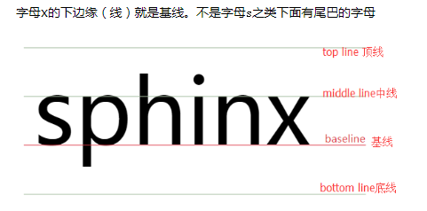

一点小例子
1.图片和文字垂直居中对齐
红点和我对齐了么？
关于垂直居中
1.方法一利用display:inline-block ;(伪类)
利用添加辅助元素helper+同时设置helper和testBox1的vertical-align：center实现垂直居中
1.1.关于baseline：

1.2.baseline 的确定规则
参考链接：https://www.cnblogs.com/starof/p/4512284.html?utm_source=tuicool&utm_medium=referral
1、inline-table元素的baseline是它的table第一行的baseline。
2、父元素【line box】的baseline是最后一个inline box 的baseline。
3、inline-block元素的baseline确定规则
规则1：inline-block元素，如果内部有linebox，则inline-block元素的baseline就是最后一个作为内容存在的元素[inline box] 的baseline，而这个元素的baseline的确定就要根据它自身来定了。
规则2：inline-block元素，如果其内部没有line box或它的overflow属性不是visible，那么baseline将是这个inline-block元素的底margin边界
1.3.vertical-align基于baseline的不同取值
1)baseline:将子元素盒子的baseline与父盒子的baseline对齐
2)middle:将元素盒子的垂直中点与父盒子的baseline加上父盒子的x-height的一半位置对齐
2.方法二：margin:auto,0(定位) 常用
3.方法三：弹性盒子
4.方法四：表格